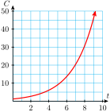
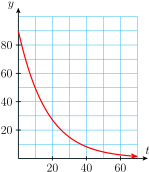
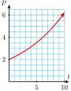
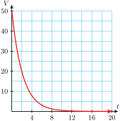

Section 7.1 Exponential Growth and Decay
Subsection Introduction
The function in Investigation 7.1 describes exponential growth. During each time interval of a fixed length, the population is multiplied by a certain constant amount. In this case, the bacteria population grows by a factor of 3 every day.

For this reason, we say that 3 is the growth factor for the function.
Subsection Growth Factors
Researchers often use cell lines from the fruit fly Drosophila melanogaster to study protein interactions related to cancer and other diseases. From 60% to 70% of human disease genes are found in Drosophila cells, and gene discoveries in the flies have led to parallel studies in vertebrates.
One milliliter of culture contains about 1 million Drosophila cells, and the population doubles every 24 hours. The table shows the population, \(P(t)\text{,}\) of Drosophila cells, in millions, as a function of time in days.
| \(t\) | \(P(t)\) |
| \(0\) | \(1\) |
| \(1\) | \(2\) |
| \(2\) | \(4\) |
| \(3\) | \(8\) |
| \(4\) | \(16\) |
| \(5\) | \(32\) |
| \(6\) | \(64\) |
Because the fruit fly population grows by a factor of 2 every day, the function \(P(t)\) describes exponential growth. Functions that describe exponential growth can be expressed in a standard form.
Exponential Growth.
The function
describes exponential growth, where \(P_0=P(0)\) is the initial value of the function and \(b\) is the growth factor.
For the Drosophila cell population, we have
so \(P_0 = 1\) and \(b=2\text{.}\) You can see that the graph of the function is not linear. In fact, the population grows slowly at first, but eventually grows faster and faster.
Example 7.1.
In 1985, there were about 1.2 million cell phone users world-wide. Since that time, the number has grown by a factor of 1.5 each year.
Make a table of values and graph the function.
Write a formula for the number, \(C(t)\text{,}\) of cell phone users \(t\) years after 1985.
How many cell phone users does the formula predict for the year 2000?
-
We let \(t=0\) in 1985, so \(C(0)=1.2\text{,}\) in millions. Each value of \(C(t)\) can be obtained by multiplying the previous value by the growth factor, 1.5.
\(t\) \(C(t)\) \(\) \(0\) \(1.2\) \(\) \(1\) \(1.8\) \(\blert{1.2\times 1.5 = 1.8}\) \(2\) \(2.7\) \(\blert{1.8\times 1.5 = 2.7}\) \(3\) \(4.05\) \(\blert{2.7\times 1.5 = 4.05}\) \(4\) \(6.08\) \(\blert{4.05\times 1.5 = 6.08}\) \(5\) \(9.1\) \(\blert{6.08\times 1.5 = 9.1}\) \(6\) \(13.7\) \(\blert{9.1\times 1.5 = 13.7}\) \(7\) \(20.5\) \(\blert{13.7\times 1.5 = 20.5}\)  The initial value of the function is \(C_0 = C(0) = 1.2\) million. The annual growth factor is \(b=1.5\text{,}\) so the formula is
\begin{equation*} C(t) = 1.2(1.5)^t \end{equation*}The year 2000 is 15 years after 1985, so we evaluate the function for \(t = \alert{15}\text{.}\)
\begin{equation*} C(\alert{15}) = 1.2(1.5)^{\alert{15}} = 525.47 \end{equation*}The formula predicts that over 525 million people used cell phones in 2000.
In the examples above, you can see that the graphs of the functions are not linear. In each case, the function grows slowly at first, but eventually grows faster and faster.
Caution 7.2.
Be careful when evaluating exponential growth functions. In part (c) of the previous Example, note that
According to the order of operations, we compute the power \(1.5^{15}\) first, and then multiply the result by 1.2.
Checkpoint 7.3. QuickCheck 1.
A population grows according to the formula \(P(t) = 800(1.06)^t\text{,}\) where \(t\) is in years.
What was the starting value of the population?
What was the population one year later?
-
What does 1.06 tell you about the population?
A) The population grew by 1.06 each year.
B) The population grew by a factor of 1.06 each year.
C) The population began at 1.06.
-
Choose the correct first step to evaluate \(800(1.06)^5\text{:}\)
A) Multiply 800 by 1.06
B) Raise 1.06 to the 5th power
Checkpoint 7.4. Practice 1.
A colony of rabbits started with 20 rabbits and doubles every 3 months.
-
Complete the table for the number of rabbits \(P(t)\) after \(t\) months, and graph the function.
\(t\) \(P(t)\) \(0\) \(3\) \(6\) \(9\) \(12\) \(15\) -
Write a formula for the function \(P(t)\text{.}\) Note that the population is multiplied by 2 every 3 months. If you know the value of \(t\text{,}\) how do you find the corresponding exponent in \(P(t)\text{?}\)
\(P(t)=\)
How many rabbits will there be after 1 year?
\(20\)
\(40\)
\(80\)
\(160\)
\(320\)
\(640\)
\(20\cdot 2^{\frac{t}{3}}\)
\(320\)
\(t\) \(P(t)\) \(0\) 20 \(3\) 40 \(6\) 80 \(9\) 160 \(12\) 320 \(15\) 640
A graph is below.
\(\displaystyle P(t)=20(2)^{t/3}\)
320 rabbits (after 12 months)
Graph for part (a):
Note 7.5.
In Practice 1, the rabbit population doubled every 3 months, leading to the growth law
To see the growth factor for the rabbit population, we use the third law of exponents to rewrite \(2^{t/3}\text{.}\)
So the growth factor for the rabbit population is \(2^{1/3}\text{,}\) or about 1.26. The rabbit population grows by a factor of 1.26 every month.
Subsection Comparing Linear Growth and Exponential Growth
It may be helpful to compare linear growth and exponential growth. Consider the two functions
whose graphs are shown below.
| \(t\) | \(L(t)\) |
| \(0\) | \(5\) |
| \(1\) | \(7\) |
| \(2\) | \(9\) |
| \(3\) | \(11\) |
| \(4\) | \(13\) |
Slope \(m=2\)
| \(t\) | \(E(t)\) |
| \(0\) | \(5\) |
| \(1\) | \(10\) |
| \(2\) | \(20\) |
| \(3\) | \(40\) |
| \(4\) | \(80\) |
Growth factor \(b=2\)
\(L\) is a linear function with \(y\)-intercept 5 and slope 2; \(E\) is an exponential function with initial value 5 and growth factor 2. In a way, the growth factor of an exponential function is analogous to the slope of a linear function: Each measures how quickly the function is increasing.
However, for each unit increase in \(t\text{,}\) 2 units are added to the value of \(L(t)\text{,}\) whereas the value of \(E(t)\) is multiplied by 2. An exponential function with growth factor 2 eventually grows much more rapidly than a linear function with slope 2, as you can see by comparing the graphs or the function values in the tables.
Example 7.6.
A solar energy company sold $80,000 worth of solar collectors last year, its first year of operation. This year its sales rose to $88,000. The marketing department must estimate its projected sales for the next 3 years.
If the marketing department predicts that sales will grow linearly, what sales total should it expect next year? Graph the projected sales figures over the next 3 years, assuming that sales will grow linearly.
If the marketing department predicts that sales will grow exponentially, what sales total should it expect next year? Graph the projected sales figures over the next 3 years, assuming that sales will grow exponentially.
-
Let \(L(t)\) represent the company's total sales \(t\) years after starting business, where \(t = 0\) is the first year of operation. If sales grow linearly, then \(L(t)\) has the form \(L(t) = mt + b\text{.}\) Because \(L(0) = 80,000\text{,}\) the intercept \(b\) is 80,000. The slope \(m\) of the graph is
\begin{equation*} \dfrac{\Delta S}{\Delta t}= \dfrac{8000 \text{ dollars}}{1\text{ year}}= 8000 \text{ dollars/year} \end{equation*}where \(\Delta S = 8000\) is the increase in sales during the first year. Thus, \(L(t) = 8000t + 80,000\text{,}\) and sales grow by adding $8000 each year. The expected sales total for the next year is
\begin{equation*} L(2) = 8000(2) + 80,000 = 96,000 \end{equation*} -
Let \(E(t)\) represent the company's sales assuming that sales will grow exponentially. Then \(E(t)\) has the form \(E(t) = E_0 b^t\text{,}\) and the initial value is \(E_0 = 80,000\text{.}\) We find the growth factor in sales over the first year by dividing \(E(1)\) by \(E_0\text{:}\)
\begin{align*} E(1) \amp = E_0 b^1\\ \text{so}~~b \amp = \dfrac{E(1)}{E_0} = \dfrac{88,000}{80,000} = 1.1 \end{align*}Thus, \(E(t) = 80,000(1.1)^t\text{,}\) and the expected sales total for the next year is
\begin{equation*} E(2) = 80,000(1.10)^2= 96,800 \end{equation*}
We evaluate each function at several points to obtain the graphs shown in the figure.
| \(t\) | \(L(t)\) | \(E(t)\) |
| \(0\) | \(80,000\) | \(80,000\) |
| \(1\) | \(88,000\) | \(88,000\) |
| \(2\) | \(96,000\) | \(96,800\) |
| \(3\) | \(104,000\) | \(106,480\) |
| \(4\) | \(112,000\) | \(117,128\) |
Subsection Exponential Decay
In the examples above, exponential growth was modeled by increasing functions of the form
where the growth factor, \(b\text{,}\) is a number greater than 1. If we multiply the function value by a number smaller than 1, the function values will decrease. Thus, if \(0 \lt b \lt 1\text{,}\) then \(P(t) = P_0b^t\) is a decreasing function. In this case, we say that the function describes exponential decay, and the constant \(b\) is called the decay factor.
Example 7.7.
Before the introduction of disposable containers, soft drinks and draught beer were sold in refillable glass botles. During the second half of the last century, the percent of beer volume sold in refillable glass bottles declined by a factor of 0.942 each year.
In 1944, 98% of beer was sold in refillable bottles. Write a formula for the percent of beer sold in refillable bottles as a function of \(t\text{,}\) the number of years after 1944.
Graph the function from 1944 to 2000.
In 1998, only 3.3% of beer was sold in refillable bottles. How well does the model predict this number?
We let \(t=0\) in 1944, so that \(P_0 = 98\text{.}\) The formula is
\begin{equation*} P(t)=P_0 b^t = 90(0.942)^t \end{equation*}-
We evaluate the formula for several values of \(t\text{,}\) and plot the data points.
Year 1950 1965 1980 1995 \(t\) \(6\) \(21\) \(36\) \(51\) \(P(t)\) 68.5% 27.9% 11.4% 4.7%  In 1998, \(t=54\text{,}\) and
\begin{equation*} P(54) = 98(0.942)^{54} = 3.89 \end{equation*}The model predicts that 3.89% of beer was sold in refillable bottles in 1998, just slightly above the actual figure.
Checkpoint 7.8. Practice 2.
The number of perch in Hidden Lake has declined to 0.88 of its previous value every year since 2000, when the perch population was estimated at 8000.
-
Let \(P(t)\) represent the perch population \(t\) years after 2000. Complete the table.
\(t\) \(2\) \(8\) \(10\) \(15\) \(20\) \(P(t)\) -
Write a formula for the function \(P(t)\text{.}\)
\(P(t)=\)
Graph the function, using the table values to choose an appropriate window.
What does the model predict for the perch population in 2025?
\(6195.2\)
\(2877.08\)
\(2228.01\)
\(1175.79\)
\(620.502\)
\(8000\cdot 0.88^{t}\)
\(327.459\)
\(t\) \(2\) \(8\) \(10\) \(15\) \(20\) \(P(t)\) \(6195\) \(2877\) \(2228\) \(1176\) \(621\) \(\displaystyle 8000\cdot 0.88^t\)
A graph is below.
327
Graph for part (c):
Checkpoint 7.9. QuickCheck 2.
We can tell whether a linear function is increasing or decreasing by whether its slope is
positive or negative
greater than 1 or less than 1
We can tell whether an exponential function is increasing or decreasing by whether \(b\) is
positive or negative
greater than 1 or less than 1
If a linear function has slope 1.5, each time we increase the input by 1 unit, how do we find the new function value from the old one?
Add 1.5
Multiply by 1.5
If an exponential function has growth factor 1.5, each time we increase the input by 1 unit, how do we find the new function value from the old one?
Add 1.5
Multiply by 1.5
Subsection Percent Increase
Exponential growth is often described as growth by a certain percent increase. Suppose the town of Lakeview had 4000 residents in the year 2000, and grew at a rate of 5% per year. This means that each year we add 5% of last year's population to find the current population, \(P(t)\text{.}\) Thus
and so on. Now here is the important observation about percent increase:
Thus, we can find the current population by multiplying the old population by 1.05. In other words,
A formula for the population of Lakeview \(t\) years after 2000 is
This formula describes exponential growth with a growth factor of \(b=1.05\text{.}\) In general, a function that grows at a percent rate \(r\text{,}\) where \(r\) is expressed as a decimal, has a growth factor of \(b=1+r\text{.}\)
Growth by a Constant Percent.
The function
describes exponential growth at a constant percent rate of growth, \(r\text{.}\)
The initial value of the function is \(P_0 = P(0)\text{,}\) and \(b=1+r\) is the growth factor.
Many quantities besides population can grow by a fixed percent. For example, an inflation rate gives the percent rate at which prices are rising.
Example 7.10.
During a period of rapid inflation, prices rose by 12% each year. At the beginning of this time, a loaf of bread cost $2.
Make a table showing the cost of bread over the next four years.
Write a function that gives the price of a loaf of bread years after inflation began.
How much did a loaf of bread cost after 6 years? After 30 months?
Graph the function found in (b).
-
The percent increase in the cost of bread is 12% every year. Therefore, the growth factor for the cost of bread is \(1+0.12 = 1.12\) every year. If \(P(t)\) represents the price of bread after \(t\) years, then \(P(0)=2\text{,}\) and we multiply the price by 1.12 every year, as shown in the table.
\(t\) \(P(t)\) \(\) \(0\) \(P(0)=2.00\) \(\blert{2}\) \(1\) \(P(1)=2.24\) \(\blert{2(1.12)}\) \(2\) \(P(2)=2.51\) \(\blert{2(1.12)^2}\) \(3\) \(P(3)=2.81\) \(\blert{2(1.12)^3}\) \(4\) \(P(4)=3.15\) \(\blert{2(1.12)^4}\) After \(t\) years of inflation the original price of $2 has been multiplied \(t\) times by a factor of 1.12. Thus,
\begin{equation*} P(t)=2(1.12)^t \end{equation*}To find the price of bread at any time after inflation began, we evaluate the function at the appropriate value of \(t\text{.}\)
\begin{equation*} P(\alert{6}) = 2(1.12)^{\alert{6}} \approx 3.95 \end{equation*}After 6 years the price was $3.95. Thirty months is 2.5 years, so we evaluate \(P(2.5)\text{.}\)\begin{equation*} P(\alert{2.5}) = 2(1.12)^{\alert{2.5}} \approx 2.66 \end{equation*}After 30 months the price was $2.66.To graph the function
\begin{gather*} P(t) = 2(1.12)^t \end{gather*}we evaluate it for several values, as shown in the table. We plot the points and connect them with a smooth curve to obtain the graph shown.

Checkpoint 7.11. QuickCheck 3.
Fill in the blanks.
Increasing by 10% is the same as multiplying by .
If a population grows by 2% annually, its growth factor is .
If a population grows by 46% annually, its growth factor is .
If a population grows by 100% annually, its growth factor is .
Checkpoint 7.12. Practice 3.
Tombstone, Arizona was the most famous “boomtown” during the gold rush in the American west. It was established in December, 1879, after the discovery of a large silver deposit nearby. The original town had 40 dwellings and a population of 100. Over the next two to three years, the population grew at an average rate of 19% per month.
What was the population one year later, in December, 1880?
-
Write a formula for \(P(t)\text{,}\) the population of Tombstone \(t\) months after its founding.
\(P(t)=\)
-
Complete the table and sketch a graph of \(P(t)\text{.}\) A suggest grid is above.
\(t\) \(0\) \(5\) \(10\) \(15\) \(20\) \(25\) \(P(t)\) -
Tombstone’s peak population was about 10,000 people. Use your graph to estimate the time it took to reach that figure.
About months
\(806.424\)
\(100\cdot 1.19^{t}\)
\(100\)
\(238.635\)
\(569.468\)
\(1358.95\)
\(3242.94\)
\(7738.81\)
\(26.4736\)
806
\(\displaystyle P(t)=100(1.19)^t\)
\(t\) \(0\) \(5\) \(10\) \(15\) \(20\) \(25\) \(P(t)\) 100 239 569 1359 3243 7739
A graph is below.
About 26 months
Graph for part (c):
Compound interest is another example of exponential growth. Suppose you deposit a sum of money into an account that pays 5% interest compounded annually. Each year, 5% of your current balance is added to your account as interest, so your balance grows by a factor of 1.05. In general, we have the following formula.
Compound Interest.
If a principal of \(P\) dollars is invested in an account that pays an interest rate \(r\) compounded annually, the balance \(B\) after \(t\) years is given by
Subsection Percent Decrease
We have seen that a percent increase of \(r\) (in decimal form) corresponds to a growth factor of \(b=1+r\text{.}\) A percent decrease of \(r\) corresponds to a decay factor of \(b=1-r\text{.}\) For example, if a population declines by 25% each year, then each year the new population is 75% of its previous value. So
and \(P(t) = P_0 (0.75)^t\text{.}\) Remember that multiplying by \(b\) gives us the population remaining, not the amount of decline.
Example 7.13.
According to Context magazine: "Computing prices have been falling exponentially for the past 30 years and will probably stay on that curve for another couple of decades." In fact, prices have been falling at a rate of 37% every year. Suppose an accounting firm invests $50,000 in new computer equipment.
Write a formula for the value \(V(t)\) of the equipment \(t\) years from now.
What will the equipment be worth in 5 years?
Graph the function \(V(t)\) for \(0 \le t \le 20\text{.}\)
-
The initial value of the equipment is \(V_0 = 50,000\text{.}\) Every year, the value of the equipment is multiplied by
\begin{equation*} b=1-r=1-0.37 = 0.63 \end{equation*}After \(t\) years, the value of the equipment is
\begin{equation*} V(t)=50,000(0.63)^t \end{equation*} -
After 5 years, we have
\begin{equation*} V(\alert{5}) = 50,000(0.63)^{\alert{5}} = 4962.18 \end{equation*}The value of the equipment after 5 years is $4962.18.
We evaluate the function \(V(t)\) for several values of \(t\text{,}\) and plot the points to obtain the graph shown.
\(t\) \(2\) \(4\) \(6\) \(10\) \(12\) \(V(t)\) \(19,845\) \(7876\) \(3126\) \(492\) \(195\) 
Note 7.14.
In the preceding Example, the value of the computer equipment decreases by 37% each year, so 63% of the value remains, and the decay factor for the value function is 0.63, not 0.37. The function \(V(t)\) gives the value remaining, not the amount that has depreciated.
Checkpoint 7.15. Practice 4.
The number of butterflies visiting a nature station is declining by 18% per year. In 2012, 3600 butterflies visited the nature station.
-
What is the decay factor in the annual butterfly count?
Answer:
-
Write a formula for \(B(t)\text{,}\) the number of butterflies \(t\) years after 2012.
\(B(t)=\)
-
Complete the table and sketch a graph of \(B(t)\text{.}\)
\(t\) \(0\) \(2\) \(4\) \(6\) \(8\) \(10\) \(B(t)\)
\(0.82\)
\(3600\cdot 0.82^{t}\)
\(3600\)
\(2420.64\)
\(1627.64\)
\(1094.42\)
\(735.891\)
\(494.813\)
\(\displaystyle 0.82\)
\(\displaystyle B(t) = 3600\cdot 0.82^t\)
\(t\) \(0\) \(2\) \(4\) \(6\) \(8\) \(10\) \(B(t)\) 3600 2421 1628 1094 736 495
A graph is below.
Graph for part (c):
Caution 7.16.
Compare these two descriptions of exponential decay:
Each year, the population decreases by 25% of its previous value.
Each year, the population decreases to 25% of its previous value.
In the first description, \(r=0.25\) and \(b=1-r = 0.75\text{.}\) If the population this year is 100, next year it will be 75. If 25% of the population is gone, 75% remains.
In the second description, only 25% of the population remains, so \(b = 0.25\text{.}\) If the population this year is 100, next year it will be 25.
Checkpoint 7.17. QuickCheck 4.
If \(b=0.9\text{,}\) it represents a decrease of %.
An annual decrease of 15% corresponds to a decay factor of .
-
Which function decreases more rapidly: \(f(x)\text{,}\) with a decay factor of 0.15, or \(g(x)\text{,}\) with a decay factor of 0.05?
\(f(x)\text{,}\) with a decay factor of 0.15,
\(g(x)\text{,}\) with a decay factor of 0.05
An exponential function \(P(t)=P_0b^t\) is decreasing if .
We summarize our observations about exponential growth and decay functions as follows.
Exponential Growth and Decay.
The function
models exponential growth and decay.
\(P_0 =P(0)\) is the initial value of \(P\text{;}\)
\(b\) is the growth or decay factor.
If \(b \gt 1\text{,}\) then \(P(t)\) is increasing, and \(b = 1 + r\text{,}\) where \(r\) represents percent increase.
If \(0 \lt b \lt 1\text{,}\) then \(P(t)\) is decreasing, and \(b = 1 - r\text{,}\) where \(r\) represents percent decrease.
Checkpoint 7.18. Practice 5.
A new car begins to depreciate in value as soon as you drive it off the lot. Some models depreciate linearly, and others depreciate exponentially. Suppose you buy a new car for $20,000, and 1 year later its value has decreased to $17,000.
-
If the value decreased linearly, what was its annual rate of decrease?
$ per year
If the value decreased exponentially, what was its annual decay factor? What was its annual percent depreciation? %
-
Calculate the value of your car when it is 5 years old under each assumption, linear or exponential depreciation.
Linear: $
Exponential: $
Exercises Problem Set 7.1
Warm Up
1.
A parking permit at Huron College cost $25 last year, but this year the price increased by 12%. What is the price this year?
If the price of a parking permit increases by 12% again next year, what will the price be then?
Did the parking permit increase by the same amount each year? Why or why not?
2.
The computer you want cost $1200 when it first came on the market, but after 3 months the price was reduced by 15%. What was the price then?
If the price falls by another 15% next month, what will the price be then?
Did the price fall by the same amount each month? Why or why not?
3.
The value of your stock portfolio fell 10% last year, but this year it increased by 10%. How does the current value of your portfolio compare to what it was two years ago?
4.
You got a 5% raise in January, but then in March everyone took a pay cut of 5%. How does your new salary compare to what it was last December?
Exercise Group.
For Problems 5–10, solve. Round your answers to two places if necessary.
5.
\(768 = 12b^3\)
6.
\(1875 = 3b^4\)
7.
\(14,929.92 = 5000b^6\)
8.
\(151,875 = 20,000b^5\)
9.
\(1253 = 260(1+r)^{12}\)
10.
\(56.27 = 78(1-r)^8\)
Skills Practice
11.
The population of Summerville is currently 12 hundred people.
Write a formula for the population if it grows at a constant rate of 1.5 hundred people per year. What is the population after 3 years?
Write a formula for the population if it has a constant growth factor of 1.5 per year. What is the population after 3 years?
12.
Delbert's sports car was worth $45,000 when he bought it.
Write a formula for the value of the car if it depreciates at a constant rate of $7000 per year. What is the value of the car after 4 years?
Write a formula for the value of the car if it has a constant depreciation factor of 0.70 per year. What is the value of the car after 4 years?
13.
Francine's truck was worth $18,000 when she bought it.
Write a formula for the value of the truck if it depreciates by $2000 per year. What is the value of the truck after 5 years?
Write a formula for the value of the truck if it depreciates by 20% per year. What is the value of the truck after 5 years?
14.
The population of Lakeview is currently 150,000 people.
Write a formula for the population if it grows by 6000 people per year. What is the population after 2 years?
Write a formula for the population if grows by 6% per year. What is the population after 2 years?
15.
The table shows the growth factor for a number of different populations. For each population, find the percent growth rate.
| Population | A | B | C | D | E |
| Growth factor | \(1.2\) | \(1.02\) | \(1.075\) | \(2.0\) | \(2.15\) |
| Percent growth rate | \(\) | \(\) | \(\) | \(\) | \(\) |
16.
The table shows the decay factor for a number of different populations. For each population, find the percent decay rate.
| Population | A | B | C | D | E |
| Decay factor | \(0.6\) | \(0.06\) | \(0.96\) | \(0.996\) | \(0.096\) |
| Percent decay rate | \(\) | \(\) | \(\) | \(\) | \(\) |
Exercise Group.
The graphs in Problems 17 and 18 represent exponential growth or decay.
Find the initial value and the growth or decay factor.
Write a formula for the function.
17.

18.

Exercise Group.
For Problems 19–22,
Each table describes exponential growth or decay. Find the growth or decay factor.
Complete the table. Round values to two decimal places if necessary.
19.
| \(x\) | \(0\) | \(1\) | \(2\) | \(3\) | \(4\) |
| \(Q\) | \(20\) | \(24\) | \(\hphantom{000}\) | \(\hphantom{000}\) | \(\hphantom{000}\) |
20.
| \(w\) | \(0\) | \(1\) | \(2\) | \(3\) | \(4\) |
| \(N\) | \(120\) | \(96\) | \(\hphantom{000}\) | \(\hphantom{000}\) | \(\hphantom{000}\) |
21.
| \(t\) | \(0\) | \(1\) | \(2\) | \(3\) | \(4\) |
| \(C\) | \(10\) | \(\hphantom{000}\) | \(6.4\) | \(\hphantom{000}\) | \(\hphantom{000}\) |
22.
| \(n\) | \(0\) | \(1\) | \(2\) | \(3\) | \(4\) |
| \(B\) | \(200\) | \(\hphantom{000}\) | \(\hphantom{000}\) | \(266.2\) | \(\hphantom{000}\) |
Applications
Exercise Group.
For Problems 23–30,
Complete the table of values.
Write a function that describes exponential growth or decay.
Use your calculator to graph the function.
Evaluate the function at the given values.
23.
Sales of Windsurfers have increased 12% per year since 2010. If Sunsails sold 1500 Windsurfers in 2010, how many did it sell in 2015? How many should it expect to sell in 2022?
| Years after 2010 | \(0\) | \(1\) | \(2\) | \(3\) | \(4\) |
| Windsurfers | \(\) | \(\) | \(\) | \(\) | \(\) |
24.
Paul bought a house for $200,000 in 1983. For the next 20 years, housing prices rose an average of 5% per year. How much was the house worth in 1995? In 2000?
| Years after 1983 | \(0\) | \(5\) | \(10\) | \(15\) | \(20\) |
| Value of house | \(\) | \(\) | \(\) | \(\) | \(\) |
25.
A typical beehive contains 20000 insects. The population can increase in size by a factor of 2.5 every 6 weeks. How many bees could there be after 4 weeks? After 20 weeks?
| Weeks | \(0\) | \(6\) | \(12\) | \(18\) | \(24\) |
| Bees | \(\) | \(\) | \(\) | \(\) | \(\) |
26.
Otto invests $600 in an account that pays 7.3% interest compounded annually. How much is in Otto's account after 3 years? After 6 years?
| Years | \(0\) | \(1\) | \(2\) | \(3\) | \(4\) |
| Account balance | \(\) | \(\) | \(\) | \(\) | \(\) |
27.
During a vigorous spraying program, the mosquito population was reduced to \(\dfrac{3}{4}\) of its previous size every week. If the mosquito population was originally estimated at 250,000, how many mosquitoes remained after 3 weeks of spraying? After 9 weeks?
| Weeks | \(0\) | \(2\) | \(4\) | \(6\) | \(8\) |
| Mosquitos | \(\) | \(\) | \(\) | \(\) | \(\) |
28.
Scuba divers find that the water in Emerald Lake filters out 15% of the sunlight for each 4 feet they descend. How much sunlight penetrates to a depth of 20 feet? To a depth of 45 feet?
| Feet | \(0\) | \(4\) | \(8\) | \(12\) | \(16\) |
| % of light | \(\) | \(\) | \(\) | \(\) | \(\) |
29.
Arch's motorboat cost $15,000 in 2000 and has depreciated by 11.5% every year. How much was the boat worth in 2009? In 2010?
| Years | \(0\) | \(3\) | \(6\) | \(9\) | \(12\) |
| Value of boat | \(\) | \(\) | \(\) | \(\) | \(\) |
30.
Plutonium-238 is a radioactive element that decays over time into a less harmful element at a rate of 0.8% per year. A power plant has 50 pounds of plutonium-238 to dispose of. How much plutonium-238 will be left after 10 years? After 100 years?
| Years | \(0\) | \(10\) | \(20\) | \(30\) | \(40\) |
| Pounds | \(\) | \(\) | \(\) | \(\) | \(\) |
31.
Riverside County is the fastest growing county in California. In 2000, the population was 1,545,387.
Write a formula for the population of Riverside County as a function of time. (You don't know the value of the growth factor \(b\) yet.)
In 2004, the population had grown to 1,871,950. Find the growth factor and the percent rate of growth.
According to this model, what was the population of Riverside County in 2010?
32.
In 2006, a new Ford Focus cost $15,574. The value of a Focus decreases exponentially over time.
Write a formula for the value of a Focus as a function of time. (You don't know the value of the decay factor yet.)
A 2-year old Focus cost $11,788. Find the decay factor and the percent rate of depreciation.
According to this model, how much did a 4-year old Focus cost?
33.
In the 1940s David Lack undertook a study of the European robin. He tagged 130 one-year-old robins and found that on average 35.6% of the birds survived each year. (Source: Burton, 1998.)
According to the data, how many robins would have originally hatched to produce 130 one-year-olds?
Write a formula for the number of the original robins still alive after \(t\) years.
Graph your function on your calculator.
One of the original robins actually survived for 9 years. How many robins does the model predict will survive for 9 years?
34.
Many insects grow by discrete amounts each time they shed their exoskeletons. Dyar’s rule says that the size of the insect increases by a constant ratio at each stage. (Source: Burton, 1998.)
Dyar measured the width of the head of a caterpillar of a swallowtail butterfly at each stage. The caterpillar’s head was initially approximately 42 millimeters wide and was 63.84 millimeters wide after its first stage. Find the growth ratio.
Write an equation for the width of the caterpillar’s head at the \(n\)th stage.
Graph your equation on your calculator.
What head width does the model predict after 5 stages?
35.
The world’s population of tigers declined from 10,400 in 1980 to 6000 in 1998.
If the population declined linearly, what was its annual rate of decrease?
If the population declined exponentially, what was its annual decay factor? What was its annual percent decrease?
Predict the number of tigers in 2010 under each assumption, linear or exponential decline.
36.
On January 10, the college infirmary treated 4 cases of flu. One week later, the total number of flu cases had grown to 6.
If the number of cases grew linearly, what was its weekly rate of growth?
If the number of cases grew exponentially, what was its weekly growth factor? What was its weekly percent increase?
Predict the number of flu cases 6 weeks later under each assumption, linear or exponential growth.
Write a function for the number of flu cases under each assumption. Graph both functions for 10 weeks from January 10.
37.
A researcher starts 2 populations of fruit flies of different species, each with 30 flies. Species A increases by 30% in 6 days, and species B increases by 20% increases in 4 days.
What was the population of species A after 6 days? Find the daily growth factor for species A.
What was the population of species B after 4 days? Find the daily growth factor for species B.
Which species multiplies more rapidly?
38.
The population of Elmira was 350,000 in 1970 and doubled in 20 years. What was the annual percent increase to the nearest hundredth of a percent?
If a population doubles in 20 years, does the percent increase depend on the size of the original population?
The population of Grayling doubled in 20 years. What was the annual percent increase to the nearest hundredth of a percent?